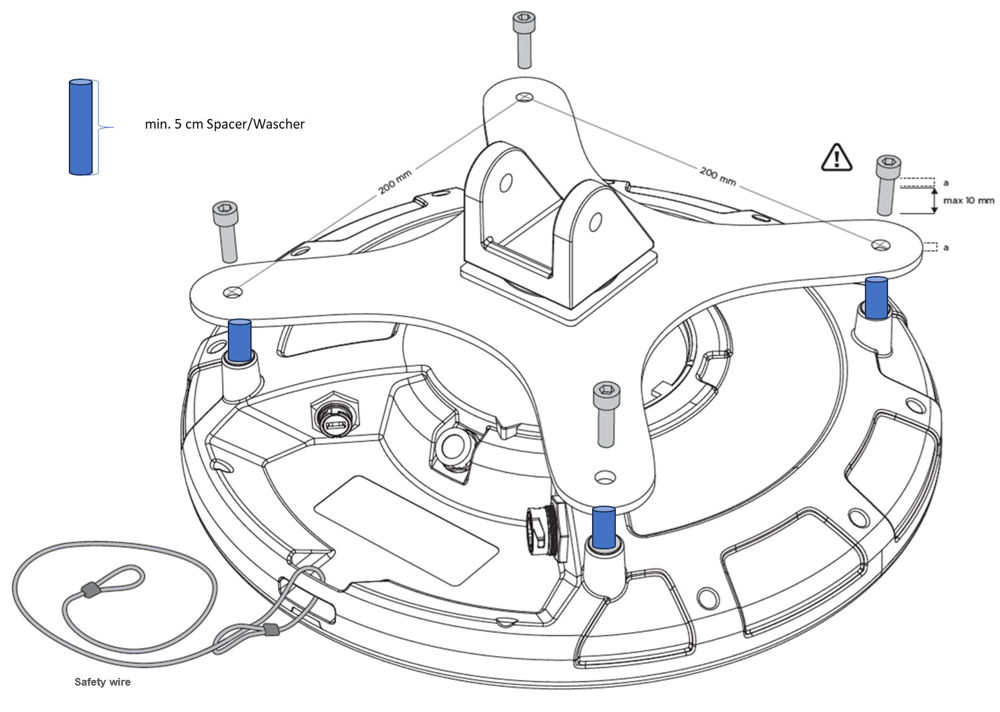

Q35 Locator Mounting Instruction
Read these instructions carefully before installing the Quuppa Q35 Locator. We also recommend familiarising yourself with the full Q35 Installation Guide, which provides further details about the procedure.
Quuppa’s recommendation is to align all Locator LEDs in the same direction. For example, install all Locators so that their LEDs face one of the cardinal points.
Installing the Q35
The Q35 should be mounted clear of any metal obstructions (e.g. air-conditioning ducts, large ceiling trusses, building superstructures) to the side or front of the device. In case needed, use a rigid conduit to lower the Q35 away from these obstructions.
Installation Using VESA Mount
Selecting Compatible Mounting Bracket
The Q35’s mounting holes are arranged according to VESA MIS-F, 200, Y, 6 standard (Four M6 threaded holes in 200x200mm pattern). Select your mounting bracket according to the requirements set by the installation environment. Please note that some mounting bracket models may prevent access to cable ports when installed. Make sure that the mounting bracket can carry the weight of Quuppa Q35 (1,3 kg) and possible wind loads.
A suitable VESA mount is available for purchase from Quuppa. See https://www.quuppa.com/documentation/megamap/topics/vesa_mount.html
Installing the Device

- Connect the Ethernet cable (and Micro USB if used) to the Locator. As the
Q35 can be used with either shielded or unshielded Ethernet (e.g. Cat5e/6), you
can choose the type of cable that best suits your deployment environment. For
example, for demanding environments (e.g. industrial or outdoor), we recommend
that you select shielded cables for better protection against electromagnetic
interference (EMI) and electrostatic discharges. Note:If you are installing the device in an outdoor environment (or an indoor environment with high levels of moisture or dust), use cables and connectors designed for outdoor use to protect the device from water, moisture and dust. In such cases, to ensure that the installation is really waterproof, we recommend that you:
- Use ready made cables, where the waterproof connector has been attached by the cable manufacturer. For example, USB Firewire RR-125320-02-XX (i.e. GTContact GT125320-0X-xx). If ready made cables are not available, you can also use a compatible connector housing part over the RJ45 connector. For example, USB Firewire RR-125360-00 or USB Firewire RR-125330-00).
- Make sure that the cable connector is securely fastened, according to the manufacturer's instructions.
- Do not remove the protective cap from the USB port unless you are using the USB port to power the Locator, in which case, make sure to also use a waterproof USB cable connector. The USB port of the Q35 is USBFirewire RR-11A200-0P-XX and it accepts USBFirewire RR-11B220-05-XX series waterproof USB cables.
- If waterproof RJ45 Field Installable Connectors are used, ensure that the Ethernet cable is between 5-8.5mm thick. Also ensure that it is not possible for water to run between the connector and the cable.
For more information regarding compatible connectors and cables, please contact the Quuppa Support team at support@quuppa.com.
- Check the cables using an Ethernet cable tester and ensure that all of the connectors are securely fastened. Avoid any sharp turns, bends or pulling on the cable when routing it to the PoE switch. You can also use the device's indicator light to troubleshoot connectivity issues. For more information, please see the Connect to Network section in the Installation Guide.
- Attach the Q35 to the mounting bracket with four bolts (shown in the picture
below). Use M6 bolts and assembly torque of 2 Nm (maximum allowed torque is 2.5
Nm).
With a thin bracket, an M6 bolts of 10 mm length can be used. With thicker brackets, please check the suitable bolt length (maximum length of the bolt to be used is 10mm + thickness of the used VESA mount). It is very important to use the right size bolts so as not to break the device.
 Note:If you are using Q-link (Q35), a spacer of minimum 5cm needs to be installed between the mounting bracket and the Q35 on both the Satellite & Hub.
Note:If you are using Q-link (Q35), a spacer of minimum 5cm needs to be installed between the mounting bracket and the Q35 on both the Satellite & Hub.
- Attach the VESA mounting bracket to the wall, ceiling, or mast.Warning:Always make sure that the installation surface or mast can carry the weight of the equipment and possible wind loads before installation.
- Aim the Q35 towards the intended coverage area and tighten all fasteners.
-
Make sure the other end of the Ethernet cable is connected to a device that is connected to the Quuppa system.
Installation Tips
-
When installed outside, install the device tilted to allow rainwater to run off the device.

-
Carry out a test installation before ordering all of the installation parts for a larger project.
-
Please check the local authorities’ safety requirements and if necessary, use a safety wire to ensure a safe installation.
-
If the Q35 needs to be tilted to achieve the intended coverage area, make sure to mount the device so that the required mechanical tilt can be achieved.
-
For more information about the Q35 Locator, please refer to the Q35 Installation Guide.